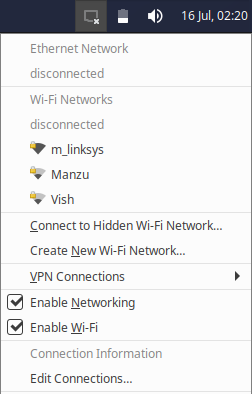
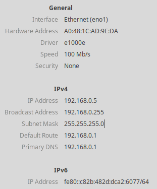
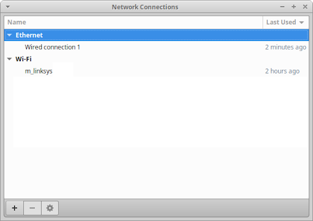
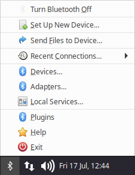
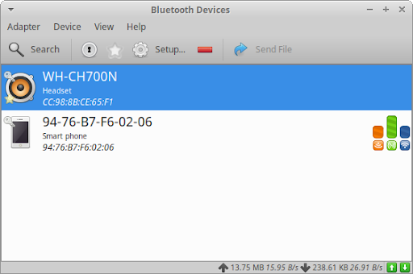

Table des matières
Que vous soyez connecté à un ordinateur sur le LAN (Local Area Network) de votre maison ou à un ordinateur à des kilomètres de distance sur Internet, l'état de votre connexion réseau vous est toujours visible dans la zone de notification du panneau. Les paramètres de personnalisation du réseau sont disponibles dans la boîte de dialogue Paramètres de configuration réseau avancés, accessible depuis la catégorie Matériel du , la catégorie Paramètres du (Ctrl + Échap), et dans la Liste d'Applications (Alt + F3).
Lorsqu'il n'y a pas d'accès au réseau, soit parce que le réseau a été désactivé ou qu'une connexion au réseau n'a pas été établie, une icône de déconnecté apparaîtra sur le panneau pour indiquer cet état. Lorsque vous êtes connecté, l'icône varie en fonction du type de connexion utilisé par le réseau.

Cliquer sur l'icône ouvrira un menu qui affiche l'état de la connectivité aux réseaux Ethernet et Wi-Fi, ainsi que la liste de tous les réseaux Wi-Fi à portée. Si vous vous connectez à l'aide d'un câble Ethernet filaire, il se connectera automatiquement, tandis que si vous sélectionnez un réseau Wi-Fi dans le menu qui n'était pas connecté auparavant, une boîte de dialogue peut s'ouvrir si un mot de passe est nécessaire.
L'entrée de menu Se connecter au réseau Wi-Fi caché... vous permettra de vous connecter à un réseau Wi-Fi qui cache son nom de réseau en saisissant le nom du réseau et, si nécessaire, le mot de passe. L'entrée de menu Créer un nouveau réseau Wi-Fi... vous permettra de créer un nouveau point d'accès sans fil à partir de votre ordinateur. L'entrée ouvrira une boîte de dialogue dans laquelle vous pourrez définir le nom du réseau, la méthode de sécurité et la clé à utiliser.

La sélection de l'élément de menu Informations sur la connexion ouvrira une boîte de dialogue qui affiche des informations sur les périphériques de connexion, y compris leurs adresses MAC, pilotes et vitesse, ainsi que des informations sur l'adresse IP en IPv4 et IPv6. La sélection de l'entrée de menu Modifier les connexions... ouvrira la boîte de dialogue de configuration réseau.
Pour vous déconnecter d'un réseau, sélectionnez l'entrée de menu Déconnecter sous le type de connexion approprié. L'activation et la désactivation des connexions filaires et sans fil sont possibles en cochant les cases Activer le réseau ou Activer le Wi-Fi. Activer le réseau activera ou désactivera toutes les connexions filaires et sans fil, tandis queActiver le Wi-Fi se limitera à activer ou désactiver les connexions sans fil.
Pour faire des changements de configuration relatifs au réseau, sélectionner l'entrée Modifier les connections... dans l'élément de menu ou ouvrir le boite de dialogue de paramètres Configuration réseau avancé à travers le , Liste d'applications, ou .

La boîte de dialogue répertorie les connexions réseau existantes classées par type de connexion. Le bas de la boîte de dialogue comporte des boutons permettant d'ajouter et de supprimer des connexions réseau ou de modifier la connexion réseau sélectionnée. Lors de la modification d'une connexion réseau, vous pouvez définir des fonctionnalités telles que le nom de la connexion, si elle doit utiliser un VPN, le clonage d'adresse MAC, les options de sécurité, les options de proxy, les options d'adresse IP et les serveurs DNS.
Si vous cliquez sur le bouton Ajouter une nouvelle connexion en bas de la boîte de dialogue , une boîte de dialogue apparaîtra vous demandant de sélectionner le type de connexion. La liste des types de connexion comprend les types de matériel, tels que DSL et haut débit mobile, les types virtuels, tels que Bond et Bridge, et les types VPN (Virtual Private Network). Si le type de connexion VPN que vous souhaitez créer n'est pas répertorié, vous devrez installer son plugin, avec OpenVPN (network-manager-openvpn-gnome), WireGuard (PPA, wireguard) et OpenConnect (network-manager-openconnect-gnome) étant des options populaires. Pour pouvoir vous connecter à certains réseaux, vous aurez peut-être besoin d'informations de connexion qui vous seront fournies par votre administrateur réseau ou votre FAI (Fournisseur d'Accès Internet).
|
Malheureusement, les modems commutés ne sont pas pris en charge par Gestionnaire réseau. Pour en savoir plus sur la connexion avec un modem commuté, veuillez vous référer au mode d'emploi du modem commuté du wiki de la communauté Ubuntu. |
Si vous êtes connecté à une connexion réseau par câble Ethernet ou par cellulaire et que vous disposez d'un adaptateur sans fil connecté à votre ordinateur ou ordinateur portable, vous pouvez partager votre connexion avec un autre ordinateur. Pour configurer le point d'accès Wi-Fi, la méthode simple consiste à sélectionner l'entrée de menu Créer un nouveau réseau Wi-Fi... via l'applet du panneau . Vous pouvez également ouvrir la boîte de dialogue des paramètres de connexions réseau et ajouter ou modifier une connexion Wi-Fi. Dans la boîte de dialogue des propriétés de connexion, passez à l'onglet Paramètres IPv4 et modifiez en Partagé avec d'autres ordinateurs dans la liste déroulante.
Bluetooth est une technologie sans fil populaire qui nous permet de coupler facilement nos ordinateurs, téléphones mobiles et tablettes à des périphériques d'entrée et de sortie, tels que des casques, des haut-parleurs, des souris, des claviers et des imprimantes. Si un adaptateur Bluetooth est connecté à votre ordinateur, une applet Bluetooth apparaîtra dans la zone de notification du panneau. Si l'icône Bluetooth est grisée, alors l'adaptateur Bluetooth est désactivé et le passage de la souris sur l'icône affichera également cet état dans l'info-bulle. Cliquer sur l'icône affichera un menu avec des options d'action, telles que la modification de l'état de l'adaptateur et l'envoi d'un fichier à un appareil, ainsi que des options de configuration, telles que les paramètres de l'adaptateur et de l'appareil.

L'élément de menu supérieur vous permettra d'activer ou de désactiver l'adaptateur Bluetooth en fonction de son état actuel. L'élément de menu Configurer un nouvel appareil... ouvrira une boîte de dialogue d'assistant pour vous aider à connecter votre nouveau périphérique Bluetooth. L'entrée de menu Adaptateurs... ouvrira une boîte de dialogue dans laquelle vous pourrez définir la visibilité et le nom de diffusion de l'adaptateur. L'entrée de menu Périphériques... ouvrira la boîte de dialogue des paramètres du gestionnaire Bluetooth, qui est également accessible via le , la liste d'applications ou le .

La boîte de dialogue des paramètres répertoriera tous les appareils Bluetooth connectés à votre ordinateur. Pour vous connecter à de nouveaux appareils, cliquez sur le bouton Rechercher et les appareils visibles apparaîtront dans la liste. Sélectionnez le nouvel appareil et associez-le ou connectez-vous via le bouton Appairer dans la barre d'outils ou les éléments du menu contextuel du clic droit. Des options supplémentaires pour renommer, approuver, supprimer ou envoyer un fichier à un appareil peuvent être trouvées dans la barre d'outils ou dans le menu contextuel. Pour apporter des modifications aux paramètres de l'adaptateur, ouvrez le menu Adaptateur et sélectionnez Préférences.
Pour vous connecter à différents types de serveurs, vous pouvez utiliser → → . Pour vous connecter à un serveur, suivez les étapes ci-dessous :
Allez vers →
Sélectionnez le Type de service approprié et insérez les informations de connexion
Cliquez sur ; si vous cherchez à vous connecter à un serveur qui demande une authentification, vous serez invité à saisir un mot de passe
Une fois la connexion réussie au serveur, une icône avec les détails de connexion apparaîtra dans la fenêtre Gigolo. Pour ajouter des connexions à vos favoris, cliquez avec le bouton droit sur une connexion et sélectionnez Créer un signet. Dans la boîte de dialogue Modifier les signets, vous pouvez nommer le signet et définir d'autres options, notamment l'option de connexion automatique. Une fois que vous avez terminé, cliquez sur OK pour créer le signet.
|
Le nom d'utilisateur du partage Windows doit être au format |
|
Afin de vous connecter aux réseaux Samba (partages Windows) à l'aide du gestionnaire de fichiers Thunar, vous aurez besoin que le paquet |